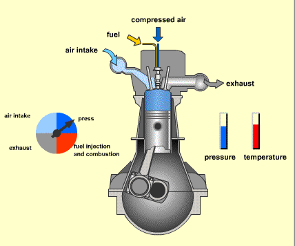

Motor bakar ditinjau dari jenis bahan bakarnya
-
Motor Bensin
Motor bensin merupakan motor bakar yang menggunakan bahan bakar bensin, parafin atau gas (bahan yang mudah terbakar dan mudah menguap). Campuran udara dan bahan bakar masuk ke dalam silinder dan dikompresikan oleh torak kepada tekanan sekitar 8-15 kg/cm2. Bahan bakar dinyalakan oleh sebuah loncatan bunga api listrik oleh busi dan terbakar cepat sekali di dalam udara kompresi tersebut. Kecepatan pembakaran melalui campuran bahan bakar udara biasanya 10 sampai 25 m/s. Suhu udara naik hingga 2000°-2500° C dan tekanannya mencapai 30-40 kg/m2.
-
Motor Diesel
Motor diesel merupakan motor bakar yang menggunakan bahan bakar minyak diesel (solar). Proses pembakaran motor diesel berbeda prosesnya dengan proses pembakaran motor bensin. Pada mesin diesel juga memiliki Siklus kerja 4 langkah seperti halnya mesin bensin 4 tak. Langkah langkah tersebut yaitu langkah hisap, langkah kompresi, langkah pembakaran, dan langkah buang.

Pada motor diesel diawali dengan udara bersih masuk melalui langkah hisap, kemudian bahan bakar dimasukan pada silinder setelah udara dulu dimampatkan oleh piston. Setelah itu bahan bakar solar yang sudah berbentuk kabut diinjeksikan oleh injektor pada ruang silinder. Karena kabut bahan bakar mudah terbakar, maka pada ruang bakar terjadi pembakaran (dan dikompresikan oleh torak, tekanan naik hingga 30-50 kg/cm2, suhu udara naik hingga 700°-900o C, suhu udara kompresi terletak di atas suhu udara penyala bahan bakar. Bahan bakar disemprotkan ke dalam udara kompresi yang panas kemudian terbakar, tekanan naik sehingga mencapai 70-90 kg/cm2. Dan perlu diperhatikan bahwa dalam motor bakar diesel tidak menggunakan busi sebagai penyala bunga api.
(Video Animasi Mesin Diesel)